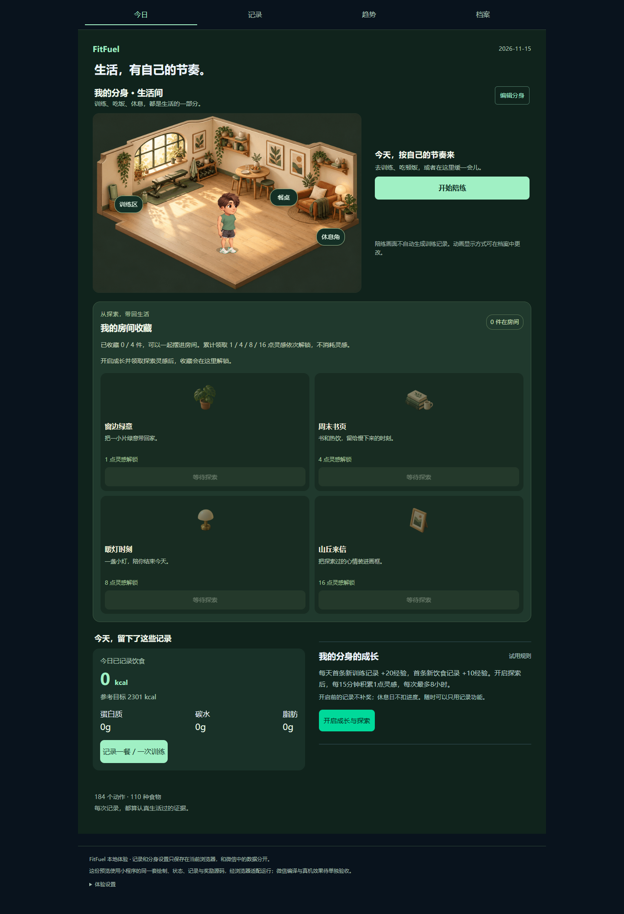

参赛作品推荐
优先请老师评估FitFuel和长文成卡；赛博西安作为重点完善候选。祈童按本人要求退出本轮推荐。以下是按已有成果和所述赛道做的建议，未代表赛事资格审核通过，也尚未投稿。
优先一 FitFuel 健身与生活游戏
建议领域：数字媒体设计 UI 交互 游戏
日常记录与生活间反馈形成完整交互流程，网页可操作，也有真实录屏。网页、Android、小程序与分身先合并为一个系列。
还差什么：补充最终用户流程、关键界面与素材说明；小程序需微信开发工具及真机核查。当前生活间的角色家具使用Kenney CC0，不写成全部模型原创。
打开成果 ↗优先二 长文成卡 AI Card
建议领域：数字媒体设计 UI 交互
桌面工具有实际编辑、导出与可继续修改的项目文件，已有视频和成品卡片，展示材料较齐。
还差什么：围绕文字到卡片的排版体验表述；当前无AI自动写稿。复杂标题裁剪尚有缺陷，送评样例需逐页复查。
打开成果 ↗重点候选 赛博西安交互建模
建议领域：数字媒体交互优先 空间或未来概念请老师判断
建筑形态、机械演出与构件介绍结合，方向鲜明；已换成11月15日风起联动最新版。
还差什么：仍为未完成原型。先收敛穿插与机构联动问题，再补最终镜头和两分钟以内演示；不能将测试版写成完成作品。
打开成果 ↗影像备选 既有AI短片
建议领域：视觉传达 动态视觉或宣传片
陇州社火公益广告和赛博西安AI影像已有完整播放入口，可由老师挑选质量更好的一支。
还差什么：先复核叙事、字幕、声音、AI及素材说明；不因时长符合就判定可提交。祈童旧视频不进入本轮推荐。
打开成果 ↗实际操作视频
这版以原健身网页作业为主体，健身游戏在网站内打开；训练与饮食仍使用原网页页面。
FitFuel 原网页与健身游戏联动
实际网页录屏 · 示例记录 · 中文字幕 · 无配音。包含首页进入游戏、原网页饮食和训练记录、返回生活间查看经验变化。
FitFuel 微信生活游戏
与健身网页同系列的微信小程序版本：Q版分身、训练陪伴、探索灵感、家具解锁和共同摆放。名字与外观可以调整，进度保存在当前浏览器。

工程类型为微信小程序。这里提供浏览器适配预览，不等于已发布的微信小游戏；微信开发者工具编译、微信真机及审核尚未验收。与网页、Android合并为FitFuel系列讨论，不单独累计参赛件数。
暂不优先
Apple Universe、零散建筑练习、LOOP和PIP先保留在作品集中；知流需补当前运行演示和明确的设计问题。独立新短片尚未制作。学校校赛安排、AI及开源素材要求、指导教师和实际截止日期需向老师确认。